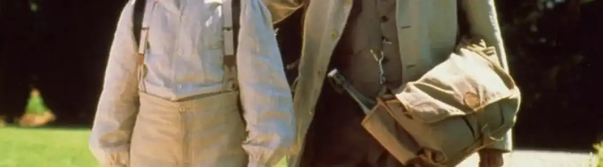
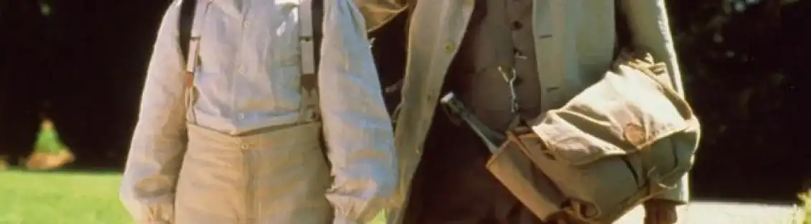
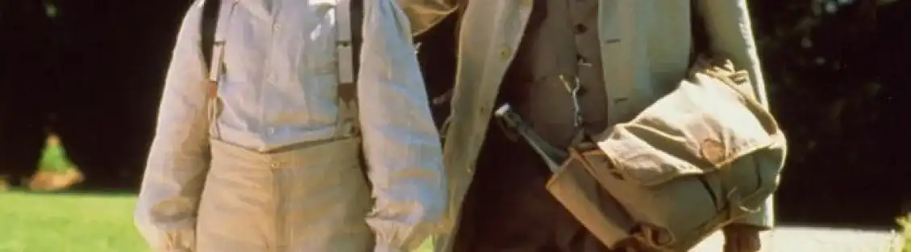

MASSILIA The Marseille of yesterday
Movie
The film La gloire de mon père, released in 1990 and directed by Yves Robert, is a film adaptation of Marcel Pagnol’s famous book. This film traces his memories of living in Aubagne. The story takes place mainly in the Garlaban hill (hill on the heights of Marseille). In this film, he describes a version of Marseille that still seems relevant.The elements still seem current with outings to Parc Borély. To summarize, this film by Yves Robert is a biography of Marcel Pagnol since it is an adaptation of an autobiography where the latter by discovering the landscape and the Provençal culture. In the scene where his father, Joseph slaughtered two birds, had an effect on the author. When he returns to the village, the latter glorifies his father, and pays tribute to him by naming his book «the glory of my father». This film allowed me at the time to better understand the history of this book.In addition, the scenes take place in my region, Les bouches du Rhône. Simple scenes with simple lines. Sentences are not very complex with a pronounced accent. Marcel writes his book with a vocabulary from when he was little. The director of the film allowed to reproduce this childish atmosphere. Watching this film allows us to have another approach to this book. Despite the time gap between the film and now (its viewing), events are still modern with ideas still in place.

Evocation of the happy childhood of the French writer Marcel Pagnol, and of his family holidays in the countryside.
See the teaser
.webp)


 
